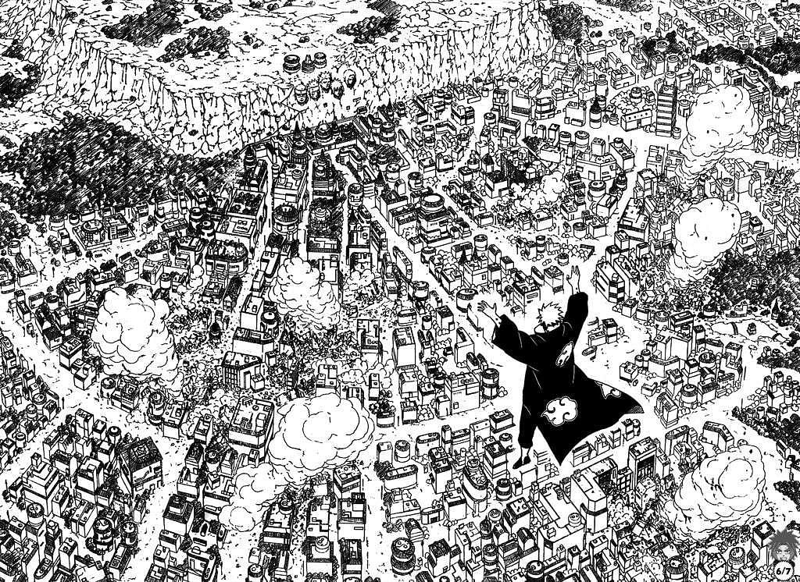

form of art under appreciated
although we live in a world that is surrounded by media and influencers,and have a big impact on the life of masses I believe every thing can be art if you willing to accept its worth for what it is and have a belief that its beutiful in its own
way.
VagaBond, VOL:15
What is Manga?
Manga are comics or graphic novels originating from Japan. Most manga conform to a style developed in Japan in the late 19th century, and the form has a long prehistory in earlier Japanese art. The term manga is used in Japan to refer to both comics
and cartooning. Outside of Japan, the word is typically used to refer to comics originally published in the country.
Word "Manga" comes from the Japanese word 漫画 composed of the two kanji 漫 (man) meaning "whimsical or impromptu" and 画 (ga) meaning "pictures". The same term is the root of the Korean word for comics, "manhwa", and the Chinese word "manhua".
Artistic Impresions
Manga stories are typically printed in black-and-white due to time constraints. Its black and white contrast gives the piece more personality than any color will ever do. of course there is colored manga as well but i believe that the black white
gives it color to a point with no extent.
like the American Comics Artstyles varie from each Mangaka and Series. some are dark,grim,dirty while some other convey light,happiness,hope. a good mangaka knows the balance between these styles and bounces around them when needed to.
Example of a light art style
Example of a Dark art style
[Berserk]
Economical success
In Japan, manga constituted an annual 40.6 billion yen (approximately US$395 million) publication-industry by 2007. In 2006 sales of manga books made up for about 27% of total book-sales, and sale of manga magazines, for 20% of total magazine-sales.
The manga industry has expanded worldwide, where distribution companies license and reprint manga into their native languages.
for example A total of 82.34 million copies of Demon Slayer were sold last year. This figure does outperform the best case estimate of the U.S. comics industry, and that is nuts in and of itself.
Demon Slayer Synopsis:
In Taisho-era Japan, Tanjiro Kamado is a kindhearted boy who makes a living selling charcoal. However, his peaceful life is shattered when a Demon slaughters his entire family. His little sister Nezuko is the only survivor, but she has
been transformed into a Demon herself!
Cover of Volume.1
Flexibility
manga encompass an enormous variety. They are funny, creative, inspirational, philosophical, artistic, trashy, and even edifying. They illustrate many themes, from romance and work to sports in schools, homes, kitchens, offices and even parliament.
They depict a wide range of emotions, virtues, and vices like konjō (strong-spiritedness), success by hard work, self-denial, dedication, persistence, manliness, pluck, or unrequited love.
Adaptation
Ofcourse when a manga reaches a level of success it will catch the eyes of Animators and such. the reason might be passion,love for the Manga,feeding the fans or simply money. and its a studio's job to make these black and white images come to life with
voice acting,colors,music and a bit creativity from Themselvs.

A panel from the Manga: Naruto
.png)
A shot from the Anime Naruto:Shippuden
An example of bringing Black and white to life